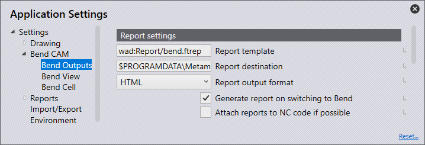
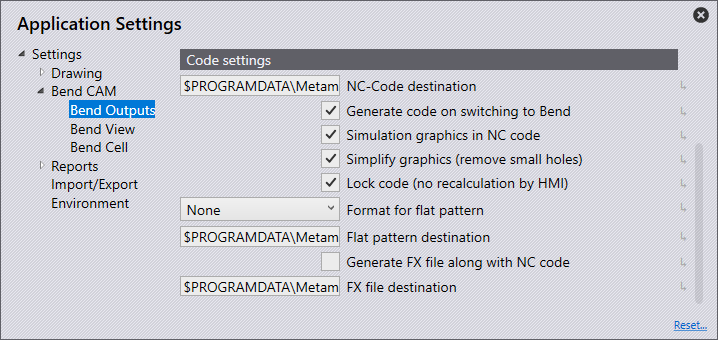

Výstupy ohybu
Nastavení podle seřizovacího plánu

Šablona seřizovacího plánu - Toto je umístění a název šablony, která se použije pro vzhled reportů.
Místo uložení seřizovacího plánu - Nastavte toto jako umístění, kam se budou ukládat všechny soubory reportů.
Formát výstupu seřizovacího plánu - Lze nastavit jako HTML nebo PDF. Upozornění: pro PDF k použití multimediálního a 3D obsahu musí být nainstalován Adobe Acrobat Reader.
Vytvoření seřizovacího plánu s programem ohýbání - Zapněte tuto funkci, aby se automaticky vygeneroval report při přechodu na ohyb a bylo nalezeno řešení . Pokud řešení zjistí nějaké chyby nebo varování, report nebude vygenerován.
Vložení seřizovacího plánu do NC kódu, pokud je to možné - Zapněte tuto funkci, chcete-li připojit reporty k NC programu.
Nastavení kódu

Místo uložení NC souboru - Nastavte toto jako umístění pro uložení všech souborů NC programu.
Postprocesor pro NC soubor - Jedná se o umístění a název dávkového souboru nebo externího nástroje, na který se odkazuje při generování NC programu.
Vytvoření NC souboru s programem ohýbání - Zapněte tuto funkci, aby se NC program automaticky generoval při přepnutí do režimu Ohýbání v zápustce (za předpokladu, že je generováno platné řešení bez chyb).
Zápis grafických prvků do NC souboru - Jedná se o možnost B23, která umožňuje porovnat grafiku BNC-SAT se skutečným dílem. Grafika BNC-Sat se zobrazuje na monitoru. Obraz skutečného dílu se zobrazuje na stejném monitoru. Uživatel nyní může díl posouvat, otáčet nebo naklánět, dokud se grafika BNC a obrázky skutečného dílu nepřekrývají. To pomáhá uživateli zjistit, zda je díl správně umístěn pro ohýbání.
Zjednodušení grafiky (odstranit malé otvory) - Ve výchozím nastavení je tato funkce zapnutá (a grafika BNC je zjednodušená). Tuto funkci však lze vypnout. Pokud je vypnutá, všechny otvory jsou vypsány do BNC.
Blokovací kód (žádný nový výpočet pomocí HMI) - Zapněte tuto možnost pro uzamčení kódu. Tím je zajištěno, že řídicí jednotka nezmění kód ani neprovede žádné přepočty.
Formát výstupu rozvinutí - Toto lze nastavit jako GEO, DXF nebo PDG pro výchozí možnost exportu souboru při automatickém ukládání plochého návrhu. Když je nalezeno řešení pro díl, plochý vzor lze automaticky exportovat a uložit do cílového umístění plochého vzoru, pokud však jsou nalezeny chyby nebo varování, bude nutné plochý vzor uložit ručně.
Cesta výstupu rozvinutí - Nastavte toto jako umístění pro ukládání všech plochých vzorů.
Generovat soubor FX zároveň s NC programem - Zapněte tuto možnost, aby se soubor FX uložil do zvoleného umístění při generování NC programu.
Cesta výstupu souboru FX - Nastavte toto jako umístění pro ukládání všech souborů FX.